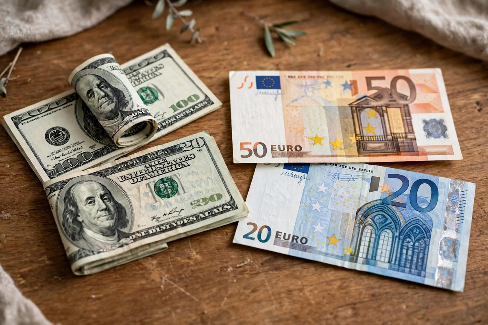
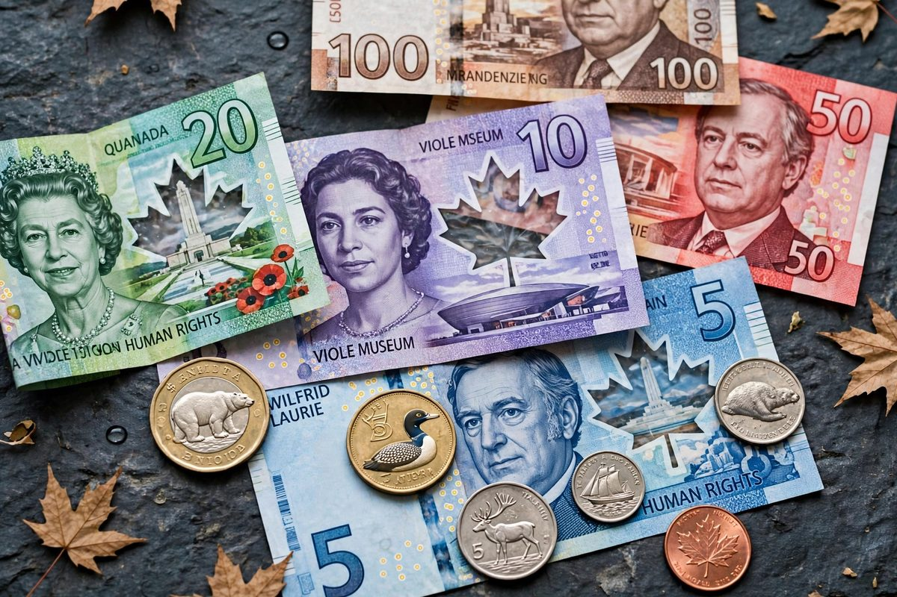
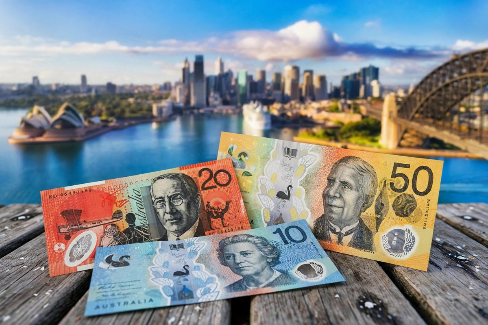

Currency Converter
Convert an amount between currencies. Rates are fetched live from the free public API open.er-api.com; if it is unreachable, a built-in approximate rate table is used instead. All rates are indicative only and are not financial advice.
Loading live rates...
How Exchange Rates Work: A Plain-English Guide

Exchange rates decide what your money is worth abroad. Learn what moves rates, who sets them, and why they change every day.
More Tools
Latest Guides
The Best Way to Convert Currency (and the Worst)

Converting money the wrong way can cost 10 percent or more. Compare banks, online services, cards and cash to find the cheapest route.
Travel Money Tips: How to Pay Abroad Without Wasting Money

Smart travel money planning saves hundreds on a trip. Learn how much cash to carry, which cards to use, and how to avoid fees.
USD to EUR: Converting Dollars to Euros in 2026

Converting dollars to euros? Learn the current rate, the cheapest methods, and the mistakes that cost travellers and senders money.
GBP to USD: Converting Pounds to Dollars in 2026

Converting pounds to dollars? Learn what drives the pound-dollar rate, the cheapest transfer methods, and the traps to avoid.
Currency Exchange Fees: The Hidden Costs Explained

Exchange fees hide in the rate, not just in the fee line. Learn to spot spreads, commissions and ATM charges before you convert.
Why You Should Never Exchange Money at the Airport
Airport exchange bureaus charge the worst rates in travel. Learn why, what to do instead, and how to handle arrival cash needs.
Multi-Currency Accounts: Hold, Convert and Spend Like a Local

A multi-currency account lets you hold many currencies in one app. Learn how they work, what they cost, and who benefits most.
Sending Money Abroad: A Complete Guide to International Transfers

Sending money overseas? Compare banks, specialists and apps on cost, speed and safety, and avoid the mistakes that delay transfers.
EUR to GBP: Converting Euros to Pounds in 2026

Converting euros to pounds? Learn what moves the rate, the cheapest methods for transfers and travel, and the errors to avoid.
USD to GBP: Converting Dollars to Pounds in 2026

Converting dollars to pounds? Learn what drives the rate, the cheapest transfer routes, and how travellers can avoid overpaying.
Japanese Yen Guide: USD to JPY and Travelling in Japan

The yen is famously volatile and Japan is increasingly cashless. Learn the USD to JPY rate, the best ways to pay, and cash tips.
Canadian Dollar Guide: USD to CAD and the Loonie Explained

The Canadian dollar follows oil prices and US rates. Learn what moves the loonie, the cheapest conversion methods, and travel tips.
Australian Dollar Guide: USD to AUD and Travelling Down Under

The Australian dollar is a commodity currency that swings with China and iron ore. Learn the rate, the best ways to pay, and cash tips.
Currency Hedging Basics: Protecting Your Money from Rate Moves
Hedging sounds complex, but the basics are simple. Learn forwards, options and natural hedges, and when a small business needs them.
Buying Property Abroad: The Currency Guide Nobody Gives You

Buying a home overseas? The exchange rate can change the price by thousands. Learn how to plan, time and protect a property payment.
Freelancing in Foreign Currency: Getting Paid Without Losing Money
Freelancers lose money on every foreign payment. Learn how to invoice, receive and convert foreign currency at the lowest cost.
A Short History of Exchange Rates: Gold, Bretton Woods and Floating Money

Exchange rates were once fixed by gold. Learn how the system changed, why currencies float today, and what history teaches us.
Cash vs Card Abroad: Which Is Cheaper and When?

Cash and cards each win in different situations. Compare costs, safety and convenience, and learn the right mix for your trip.
Best Currency Converter Apps and Tools in 2026

Currency converter apps differ in rates, fees and features. Learn what to look for and which type of tool suits your needs.